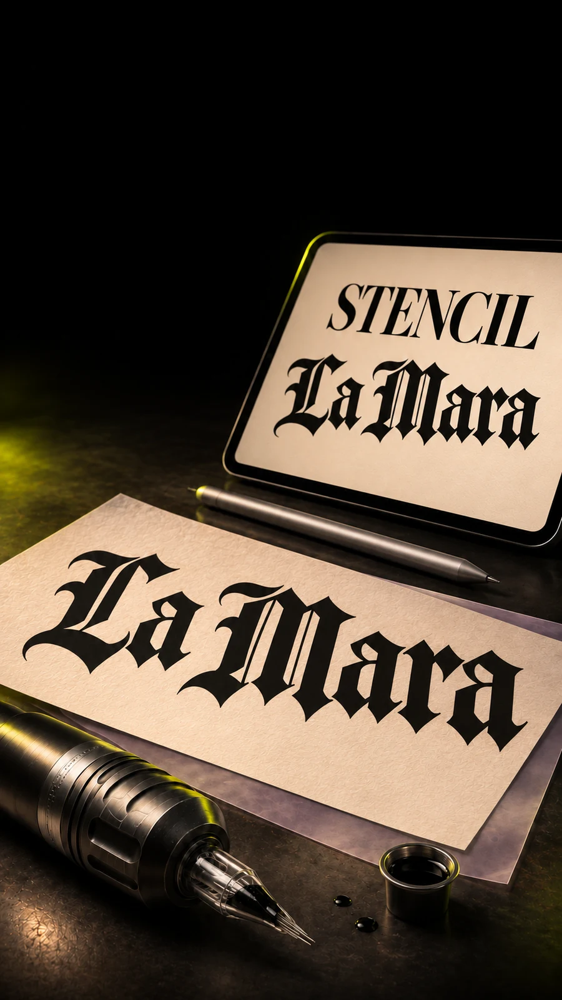
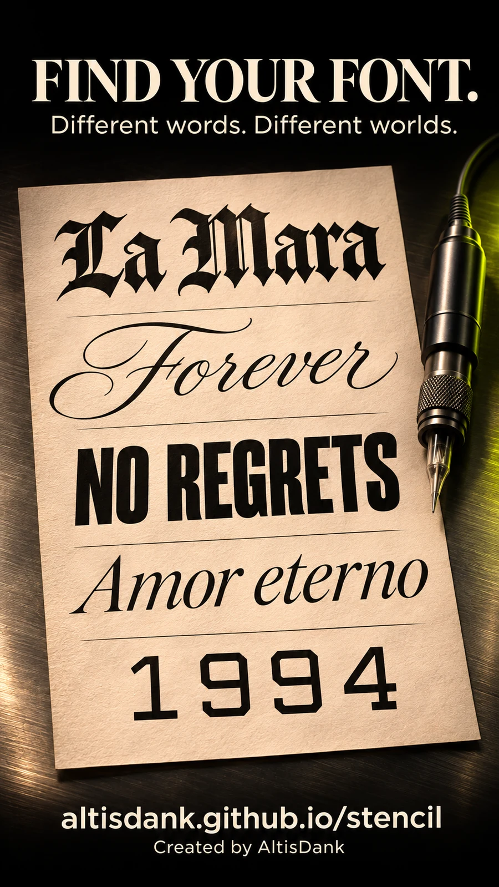

YOUR FONT.
YOUR STENCIL.
Tatueringslettering. Enklare, från början.
Skriv din text. Hitta ett uttryck bland 46 typsnitt eller importera ditt eget. Ange måtten i millimeter och skapa ett utskriftsunderlag på A4 – direkt här.
OLIKA FORMER. DITT UTTRYCK.
Börja med en känsla.
A4-verkstaden laddas…
Här skriver du text, väljer typsnitt och exporterar ditt underlag.
Ange mått i mm.
Skriv ut i 100 %.
Utgå från den synliga textens bredd eller höjd. Placera motivet på A4 och exportera konturer som PDF eller SVG. Förhandsvisningen anpassas till skärmen; måtten i filen ändras inte.
Börja med måttet
Ange bredd eller höjd i millimeter. Lås proportionerna, rotera och flytta texten direkt på arket.
Kontrollera utskriften
Välj A4 och 100 % / faktisk storlek, utan anpassning till sidan. Skriv först ut kontrollrutan på vanligt papper och mät dess 50 × 50 mm.


Från första bokstaven.
Importera ditt typsnitt
Öppna TTF, OTF eller ZIP från mobil, surfplatta eller dator. Filen läses lokalt i webbläsaren. Kontrollera alltid typsnittets licens. Importera i verkstaden ↗
Rita egna bokstäver
Skissa bokstäver med penna, finger eller mus. Prova ditt eget alfabet som text och exportera en OTF-fil i bokstavsverkstaden. Funktionen är i beta. Öppna bokstavsverkstaden ↗
A4, PDF och SVG
Spara ditt motiv som vektorer, med valfri spegling och en kontrollruta för utskrift. Välj 100 % / faktisk storlek i utskriftsdialogen. Skapa ditt underlag ↗
DITT NÄSTA UTTRYCK.
BÖRJAR HÄR.
Öppna verkstaden direkt. På mobil, surfplatta eller dator – direkt i webbläsaren.